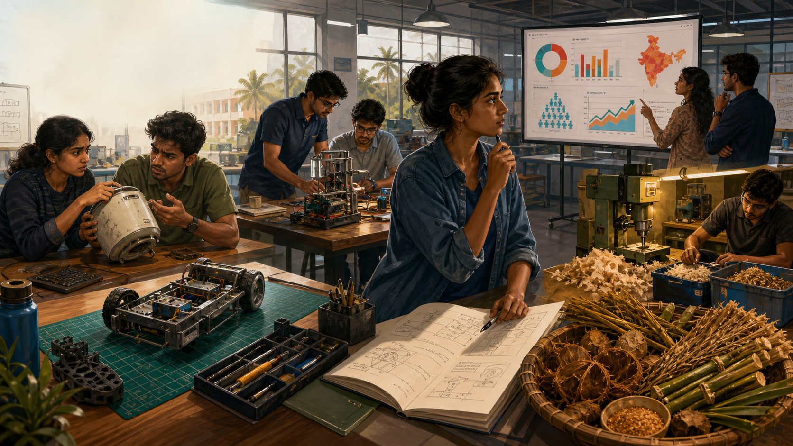

Field mission · Opportunity discovery
The Opportunity Radar
Enter an engineering innovation lab. Investigate six evidence sources, separate strong opportunity signals from fashionable assumptions and prepare a founder brief.

Investigation phase
Find six opportunity signals
Select each pulsing marker and collect the evidence before moving on.0/6Evidence signalscollected
Decision desk · Round 1 of 3
Signal or assumption?
Read the evidence and identify the strongest source of the opportunity. Feedback explains the reasoning—not just the answer.
Transfer task · Your context
Build a founder brief
Do not propose a product yet. First describe one recurring problem and the evidence that makes it worth investigating.
0/3Decision score
Mission complete
Think evidence before solution.
You have used the Opportunity Radar to connect recurring problems with credible signals and a testable founder assumption.
ObserveStart with real users, recurring friction and measurable consequences.
TriangulateMultiple independent signals make an opportunity more credible.
TestThe idea source begins the investigation; evidence determines whether to proceed.